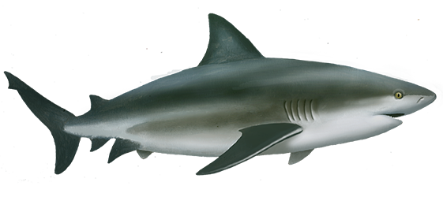
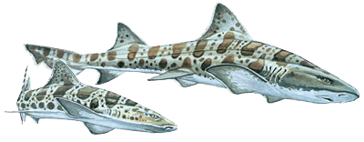
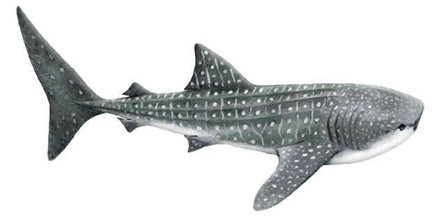
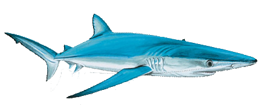
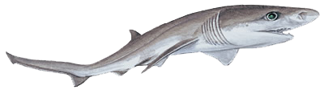

|  |
Bull Shark |
Carcharhinus leucas |
Maximum length of 11.5 feet |
Pale to dark gray above fading to a pale or white underside
|
Fish and small sharks |
Marine and freshwater shallow habitats
|
Worldwide |
|  |
Leopard Shark |
Triakis semifasciata |
Maximum length of 7 feet |
Silver to bronzy gray with dark saddles and spots, lighter
underside
|
Small fish, crabs, shrimp, worms, and fish eggs
|
Marine, sandy and muddy bays in shallow water less than 20 feet
(6 meters) in depth
|
Eastern Pacific Ocean from Oregon to the Gulf of California
|
|  |
Whale Shark |
Rhincodon typus |
Maximum length of 60 feet — largest living fish
|
Greyish, bluish or brownish above with an upper surface pattern
of creamy white spots between pale, vertical and horizontal
stripes, the underside is white
|
Plankton (microscopic plants and animals) and small schooling
fish
|
Marine, open oceans |
Marine, open oceans |
|  |
Blue Shark |
Prionace glauca |
Maximum length of 13 feet |
They range in color from a light blue to a deeper shade of it.
They may have several shades of blue on their bodies with he
darkest colors on the top
|
Squid, bony fish, smaller sharks, sea birds, shrimp, and lobster
|
Most widely distributed animal on the entire planet (everywhere
except polar regions)
|
Marine, open oceans |
|  |
Broadnose 7 Gill Shark |
Notorynchys cepedianus |
Maximum length of 10 feet |
Silver-grey or brownish upperparts and paler underparts. Adults
also have small black and white speckles on the body and fins
|
Many kinds of bony fish, dolphins, seals, other sharks, rays,
and dead matter
|
The broadnose sevengill is a coastal shark. It usually stays in
water less than 50 ft deep, in bays and estuaries. However, it
also occurs in deeper waters on continental shelves
|
Temperate regions of the world's oceans
|